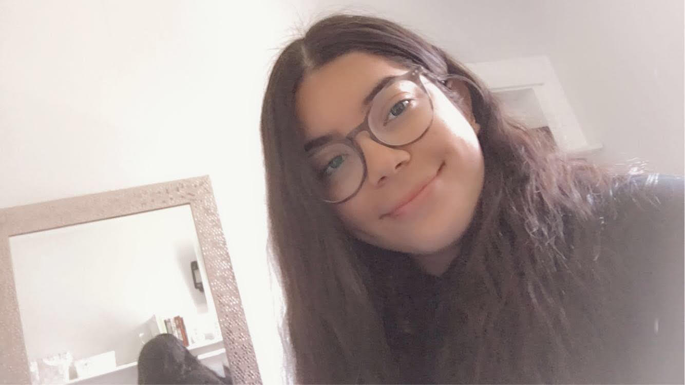

About me
My name is Atoosa Fasihi. I was born in Iran and I moved to Canada 3 years ago due to better opportunities and better education. I recently graduated from Carson Graham Secondary school and BCIT was my post-secondary institution of choice because of its reputation of excellence in computer programming, higher employment rates and smaller class sizes. I chose this program because it propels me in the correct direction to my dream career, being an information technology technician. This is my dream career because I have always been fascinated by technology and how it works. My goal from this program is to get into a successful lifestyle where I am happy in my profession and what I have accomplished along the way to getting there. And BCIT just happens to be the first step.
